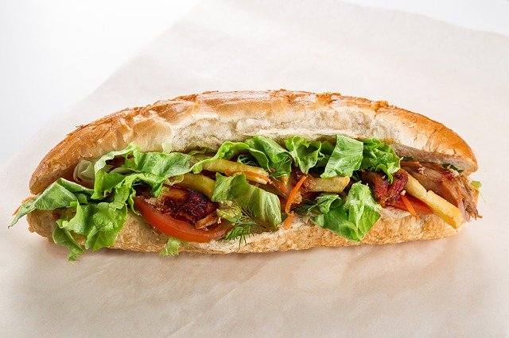

Hello HTML
이클립스 다운시 java ee 다운받음
Enterprise Edition : 자바 작성 + 웹작성
html: 웹페이지를 작성하기 위한 언어로 Hyper Text Markup Language 팀 버너스리가 개발
markup: 태그를 사용한다
안녕
html버전: 1991년 html 시작으로 html 4.0, 4.01, 2000년 xhtml 1.0, 1.1, 2.0(사장됨)
2012년 html 4.0에서 확장된 html5 대두, 최종버전 완성됨
html5: audio, video, 지도, websocket 엄청 편해짐
비디오와 오디오 심플하게 지원, css3지원, 위치정보(geolocation), local depository 지원(jQuery mobile 작성시 이것 사용)
html + css + javascripte + dom을 중심으로 함(MVC 모델)
참고: native app, web app
w3c: html표준을 관장하는 w3c(www 컨소시움)
web browser: html로 작성된 문서를 웹페이지로 출력하는 역할(IE(ms), chrome(google), FF(mozilla), safari, opera)
cross browsing: 5대 브라우저에 맞춰야됨, 영어 한국어 중국어 일어 등 맞춰야됨
(http://www.w3.org)
웹 작동 원리
web client(브라우저) --[request]--> web server
<--[response]-- .html로 보내줌
클라이언트가 요청하지 않으면 응답도 X (그래서 만들어지 것이 websocket)
WAS: Web Application Server 그냥 웹서버는 동적인 기능을 제공 못함,
동적인 기능을 가능하게 해줌
### 아파치 톰캣 다운로드 및 압축풀기
구글에서 톰캣 검색
왼쪽메뉴에서 8.5 버전 클릭
중간쯤 core에서 64-bit windows zip(pgp, sha512) 다운로드
d드라이브에 압축 해제
그럼 apache-tomcat-8.5.61 폴더가 만들어져 있다
(필요시 8080 -> 8081등으로 변경)
서버탭의 tomcat을 더블클릭
http ... 8080 -> 8081로 변경(또는 server.xml에서 직접 변경해도 됨)
http://url:port
윈도우 서버 IIS 80 port가 기본
톰캣 서버 8080이 기본
바로 실행하려 하면 에러떨어짐, 8080포트를 오라클이 사용하고 있기 때문
1. 오라클 포트를 변경함
2. 톰캣 포트를 변경함
2번이 쉬우므로 이 수업에는 톰캣 포트를 변경할 것임
### 톰캣 사용및 문제점 해결하기
1) 처음 작성은 Dynamic Web... - 프로젝트명 쓰고 - new runtime
- 톰캣8.5설정 - browse - 톰캣의 bin방이 보이는 위치까지
그 후 next 눌러서 web.xml 자동 설정
나중에 서버 설정하는 방법
2) server문제 발생시 새로 추가(필요시 서버 삭제는 윈도우 - preferences - server - runtime ... 에서 삭제 or 서버탭에서 그냥 삭제)
이때 서버 탭에서 바로 지웠다면 다시 설정 시 configurure runtime environments에서 눌러 잡혀있는 톰캣을 선택 후 remove
그런다음 서버 설정 후 바로 프로젝트명 - 마오 - build path - configure .. project facets - runtime 탭에서 - 톰캣 체크한 후 - apply and close
(참고) 톰캣 만든 후 소스를 실행하지 말고 먼저 test 실행해봄
서버탭에서 톰캣에 마우스 놓고 - 마오 - start 이떄 에러나면 고치고 에러 안나면 stop한후 이제 소스 실행
실행 방법: html 파일 - 마오 - run as - run on server
실행 후 url을 보면 http://localhost:8080/프로젝트명/hello.html
엔 터:
xml 같은 경우는 무조건 /로 열었으면 닫아줘야됨, html은 그닥 상관 없음, xml은 문법이 까다로우나 조직적이고 구체적임, 환경 설정에 사용하기 좋음
엔 터:
띄어쓰기
줄바꿈 두번 연속 하기
줄바꿈 두번 연속 하기
HTML 실행시키는 원리
자바인 경우 jdk,jre를 통해 컴파일 후 .class를 만들고 메모리 load하여 실행
번역기(컴파일러) 종류
1. compiler 컴파일러: 미리 번역해서 기계어를 생성한 다음 실행 시 기계어만 가동
2. interpreter 인터프리터: 미리 번역 X, 실행때마다 한줄한줄씩 번역
인터프리터는 웹 브라우저에 들어있음
아하
오늘 개춥다 :D @>>==--
가즈아
빈칸 활용하기
빈칸 활용하기
글씨 굵게 하기 BOLD
그냥글씨
itatlic
취소선
밑줄긋기
안녕하세요배치기입니다북치기
y=X2
y=log10x
제목1
제목1
제목2
제목3
제목4
제목5
제목6
p테그
br테그
p테그
br테그
안녕하세요
nihaoma
안녕하세요
nihaoma
안녕하세요
nihaoma
안녕하세요
nihaoma
no pain
no gain
no pain
no gain
no pain
no gain
오우 여기서는 어떻게 써던 다 잘되네
오오 오오 오오
 |
 |
햄버거 |
샌드위치 |